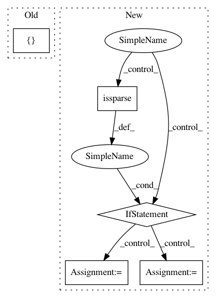

2e7c0700d00da702cdccb7c19b6fe1857b5bd1b7,imblearn/under_sampling/prototype_generation/cluster_centroids.py,ClusterCentroids,_sample,#ClusterCentroids#Any#Any#,111
Before Change
self.estimator_.set_params(**{"n_clusters": n_samples})
self.estimator_.fit(X[y == target_class])
centroids.append(self.estimator_.cluster_centers_)
y_resampled += [target_class] * n_samples
else:
target_class_indices = np.flatnonzero(y == target_class)
After Change
self._validate_estimator()
if self.voting == "auto":
if sparse.issparse(X):
self.voting_ = "hard"
else:
self.voting_ = "soft"
else:
if self.voting in VOTING_KIND:
self.voting_ = self.voting
else:
In pattern: SUPERPATTERN
Frequency: 3
Non-data size: 5
Instances
Project Name: scikit-learn-contrib/imbalanced-learn
Commit Name: 2e7c0700d00da702cdccb7c19b6fe1857b5bd1b7
Time: 2017-08-24
Author: g.lemaitre58@gmail.com
File Name: imblearn/under_sampling/prototype_generation/cluster_centroids.py
Class Name: ClusterCentroids
Method Name: _sample
Project Name: ClimbsRocks/auto_ml
Commit Name: 66e0021454419913bc4bb04640d7aa784163f4c6
Time: 2017-11-27
Author: climbsbytes@gmail.com
File Name: auto_ml/utils_model_training.py
Class Name: FinalModelATC
Method Name: fit
Project Name: scipy/scipy
Commit Name: 3e34371d41f0a1e8ab6df4214c77ace3ca9eac7d
Time: 2015-07-28
Author: evgeni@burovski.me
File Name: scipy/optimize/least_squares.py
Class Name:
Method Name: least_squares